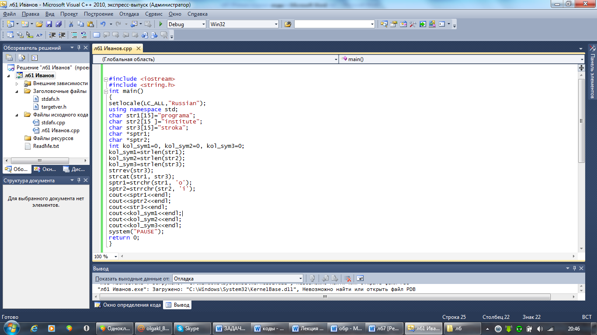

Лабораторная работа № 6
Разработка программ с использованием стандартных функции работы со строками.
Цель работы: Знакомство и получение навыков работы по созданию программ с использованием стандартных функций работы со строками.
Материальное обеспечение: Компьютерное оборудование и программное обеспечение.
Основные понятия и определения
Для представления строковых данных на языке С++ используются переменные типа char и заголовочный файл <string.h>. Строка представляет собой массив символов, заканчивающийся нуль – символом, что означает конец этой строки. Нуль – символ – это символ с кодом, равным 0, что записывается в виде управляющей последовательности ‘ \ 0’. По положению нуль – символа определяется фактическая длина строки.
Стандартные функции работы со строками.
В С++ существует ряд функций, благодаря которым над строками можно осуществлять определенные действия. Рассмотрим некоторые из них:
1. strlen (str) – подсчитывает количество символов в строке.
Пример.
int x;
char str=”Пробная строка”;
x=strlen(str);
2. strcpy(str1, str2) – копирует одну строку в другую. В качестве исходной строки можно использовать тип данных const. Копирует из строки str2 в строку str1. И результат возвращает в str1.
Пример
char str1[15]=”Первая строка”;
char str2[15];
strcpy(str2, str1);
cout<<str2; //первая строка
3. strncpy(str1, str2, int n) – копирует указанное количество символов из одной строки в другую.
Функция копирует не более n символов из str2 в str1, и возвращает в str1.
пример:
strncpy (str2, str1, 5);
cout<<str2; // перва
4. strcat(str1, str2) - объединяет строк (конкатенация). Функция добавляет str2 к str1 и возвращает результат в str1.
char str1[15]=”Первая строка”;
char str3[50];
strncpy(str3, str1, 6);
strcat(str3,str1);
cout<<str3; // первая +первая строка
5. strncat(str1, str2, int n) – складывает одну строку с n символами другой.
Функция добавляет не более n символов из str2 к str1 и возвращает в str1.
strncpy(str3, str1, 6);
strncat(str3, str1,8);
cout<<str3; // первая первая с
6. strcmp(str1, str2) - сравнивает строки.
Если они идентичны, возвращает 0; str1=str2
Если первая строка меньше второй, то возвращает отрицательное значение; str1<str2
Если первая строка больше второй, то возвращает положительное значение; str1>str2
str2=”первая строка”;
int rez=strcmp(st1, str2);
cout<<rez; // <0
7. stricmp(str1, str2) – сравнивает строки, но делает различия между строчными и прописными буквами.
8. strncmp(str1, str2, int n) – сравнивает одну строку с n символами другой.
Функция сравнивает первую строку и первые n символов второй строки и возвращает отрицательное (str1 <str2), нулевое (str1=str2), положительное (str1> str2). При этом различия символов заглавных и прописных букв различается.
Пример.
rez= strnsmp(str1, str2, 4);
cout<<rez;
9. strnicmp(str1, str2, int n) – сравнивает строки, но не различает символы верхнего и нижнего регистра.
Пример.
rez= strnismp(str1, str2, 4);
cout<<rez;
10. strlwr(str) -преобразовывает символы верхнего регистра в символы нижнего регистра. Указывает на строки и возвращает указатель на эту строку.
Пример
strlwr(str1);
cout<<str1;
11. strupr(str1) – преобразует символы нижнего регистра в символы верхнего регистра. Указывает на строки и возвращает указатель на эту строку.
Пример
strupr(str2);
cout<<str2;
12. strrev(str) представляет символы заданной строки в обратном порядке (переворачивает) и возвращает указатель на эту строку.
Пример
strrev(str1);
cout<<str1;
13. strchr(str, c) – эта функция предназначена для поиска символов в строке. Эта функция возвращает указатель на первое вхождение символа с в строку str, а если его нет, то возвращается null.
пример
сhar *sptr;
sptr=strchr(str1,’p’);
cout<<sptr; // рока
14. strrchr(str, c) – ищет символ в строке. Определяет последнее вхождение символа в заданной строке и возвращает указатель на этот символ. Если этот символ не обнаружен в заданной строке, то возвращает 0.
Пример
char *sptr;
sptr=strrchr(str2,’o’);
cout<<sptr; // овая
Этапы выполнения программы включают следующие пункты.
1.Определяете, с какими именно библиотеками (заголовочными файлами) вы будете работать. В данном случае с библиотекой iostream. Данная библиотека обеспечивает работу потока cout. Также необходимо использовать заголовочный файл string.h, для того чтобы подключить библиотеку функций работы со строками.
2.Написание главной функции программы. Функция main - главная функция программы.
3.Начало тела функции. Открывается фигурная скобка.
4.Написание операторов программы и выражений.
5.Конец функции. Закрывается фигурная скобка.
Методический пример: Написать программу, которая производит следующие действия со строками:
1.Вычисляет длину всех трех строк;
2.Переворачивает символы третьей строчки;
3.Объединение строк str1 и str3;
4.В первой строчке находит первое вхождение;
5.Во второй строчке последнее вхождение.

Результат
odramaakorts
itute
akorts
8
9
6
Варианты заданий:
1. Написать программу, которая производит следующие действия со строками:
1.Вычисляет длину второй строчки ;
2.Копирует из первой сроки в третью 6 символо;
3.Объединение строк str1 и str2.
4.Переводит символы четвертой строки их нижнего регистра в верхний регистр.
2. Написать программу, которая производит следующие действия со строками:
1.Вычисляет длину всех трех строк;
2.Переворачивает символы третьей строчки;
3.Объединение строк str1 и str3;
4.В первой строчке находит первое вхождение.
3. Написать программу, которая производит следующие действия со строками:
1.Вычисляет длину второй и третьей строчки;
2.Копирует из первой сроки во вторую 4 символа;
3.Объединение строк str1 и str3;
4.Переводит символы четвертой строки их нижнего регистра в верхний регистр.
4. Написать программу, которая производит следующие действия со строками:
1.Вычисляет длину всех трех строк;
2.Значение второй строки перевести из нижнего регистра в верхний;
3.Для первой строки найти первое вхождение;
4.Конкатенация второй и третьей строк.
5. Написать программу, которая производит следующие действия со строками:
1.Вычисляет длину второй и третьей строчки;
2.Копирует из первой сроки во вторую 3 символа;
3.Объединение строк str1 и str2;
4.Переводит символы четвертой строки их нижнего регистра в верхний регистр.
6. Написать программу, которая производит следующие действия со строками:
1.Вычисляет длину всех трех строк;
2.Переворачивает символы третьей строки в обратном порядке;
3.Объединяет первую и третью строки;
4.Для первой строки найти первое вхождение.
7. Написать программу, которая производит следующие действия со строками:
1.Вычисляет длину всех трех строк;
2.Производит копирование их второй строки в первую;
3.Производит добавление из третьей строки во вторую 5 символов;
4.Переворачивает символы четвертой строки в обратном порядке.
8. Написать программу, которая производит следующие действия со строками:
1.Вычисляет длину двух строк;
2.Символы первой строки перевести из нижнего регистра в верхний;
3.Для четвертой строки найти первое вхождение;
4.Для третьей строки найти последнее вхождение.
1.Написать программу, которая производит следующие действия со строками:
1.Вычисляет длину второй и третьей строчки;
2.Копирует из второй сроки во вторую 4 символа;
3.Объединение строк str1 и str2;
4.Переводит символы четвертой строки их нижнего регистра в верхний регистр.
10.Написать программу, которая производит следующие действия со строками:
1.Вычисляет длину всех трех строк;
2.Производит копирование их второй строки в первую;
3.Производит добавление из третьей строки во вторую 3 символов;
4.Переворачивает символы четвертой строки в обратном порядке.
11.Написать программу, которая производит следующие действия со строками:
1.Вычисляет длину первой строчки;
2.Копирует из первой сроки в третью 3 символа;
3.Объединение строк str1 и str2.
4.Переводит символы четвертой строки их нижнего регистра в верхний регистр.
12.Написать программу, которая производит следующие действия со строками:
1.Вычисляет длину второй и третьей строчки;
2.Копирует из второй сроки во вторую 6 символов;
3.Объединение строк str1 и str3;
4.Переворачивает символы четвертой строки в обратном порядке.
Порядок выполения работы:
1.Изучить теоретические сведения по данной лабораторной работе.
2.Составить программу для заданного варианта.
3.Записать программу на языке Visual C++.
4.Отладить программу.
5.Продемонстрировать работу программы на ПК для заданного варианта.
Содержание отчета:
1.Тема и цель работы.
2.Вариант задания.
3.Листинг и результат программы.
4.Контрольные вопросы.
Контрольные вопросы:
1.Какой тип переменных используется для представления строковых переменных?
2.В каком заголовочном файле определено использование функций работы со строками?
3.Назовите стандартные функции работы со строками и поясните их предназначение.
Литература:
1.Хортон А. Visual 2010: полный курс.:Пер. с анг.-М.:ООО «И.Д.Вильямс», 2011г , 1216 с.: ил.
2.Пахомов Б.И. С/C++ и MS Visual C++ 2010 для начинающих. – СПб.:БХВ-Петербург, 2011.-736 с.:ил.
3.Зиборов В. В. MS Visual C++ 2010 в среде.NET. Библиотека программиста. — СПб.: Питер,
2012. — 320 с.: ил.
4.Прохоренок Н.А. Программирование на С++ в Visual Studio 2010 Express, - СПб.: Питер, 2011г , 71 с.: ил.
5.Степаненко О.Е. VisualC++.NET.Классикапрограммирования.:-М:Научнаякнига,К.;Бу-кипист,2010.—768с.